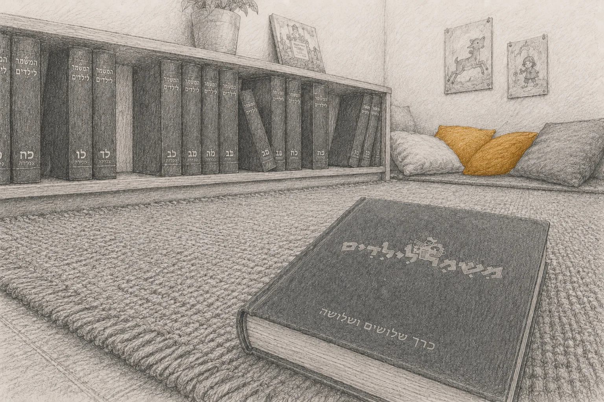

עיניים גדולות זה לא טוב
עיניים גדולות זה לא טוב
להבין יחד את בית הילדים
מרחב משותף: מאמרים שאני מביאה, לצד הסיפורים, הזיכרונות והמחשבות שאתם מבקשים לחלוק.

להתבונן מחדש על הבֶּיתֶלָדִים
איך מנכיחים את הכאב והחסך שצמחו בבית הילדים, מבלי לבטל את האהבה והכוונות הטובות של ההורים שבנו אותו? המאמרים המובאים מבקשים להחזיק יחד שני קצוות שנדמה שלעיתים הופרדו זה מזה: את מגבלותיו הַמִּבְנִיּוֹת של בית הילדים כסביבה מספקת צרכים, לצד האמונה והמסירות של הורינו, והאהבה שהובילה את עשייתם.
מתוך המרחק והבגרות של היום, זוהי הזמנה להתבונן מחדש בילדות הקיבוצית – לא כדי לשפוט, אלא כדי להבין.
הטקסטים והמאמרים מבקשים להתבונן מחדש בבית הילדים – לא דרך השאלה אם היה טוב או רע, ולא דרך השאלה מי אשם, אלא דרך שאלה אחרת: למה זקוק ילד כדי להתפתח באופן מיטיב, והאם בית הילדים, מעצם מהותו, היה מסוגל לייצר את המענים לאותם צרכים בסיסיים?
בהינתן סביבה שאינה מספקת מענים מלאים לצרכים בסיסיים – עושה הנפש האנושית את שהיא יודעת לעשות: היא מסתגלת.
המבנה והנפשות הפועלות
החסך והפצעים שצמחו בלינה המשותפת נטועים עמוק במגבלה מבנית של צורת הגידול הזו. אופיין ואישיותן של הנפשות הפועלות יכול היה להעצים את החסך או לרכך אותו, אך החסך עצמו אינו תולדת כשל של הנפשות הפועלות – לא של הילדים, לא של ההורים, ולא של המטפלות. הכאב נולד מתוך המפגש הבסיסי והבלתי-אפשרי בין הצרכים הרגשיים וההתפתחותיים הטבעיים של ילד, לבין מערכת שמבנית – מעצם אופייה וצורת ארגונה – לא יכלה לספק צרכים אלה.
טיבן של הנפשות הפועלות – מטפלת מיטיבה מול מביישת, ילד מקובל לעומת דחוי, הורים מעורבים או כאלה שלא ידעו את ילדם – שינה, כמובן. מי הילד, הוריו, המטפלת והקבוצה - אלה צבעי המציאות, ואלה היו שונים עבור כל אחד מאיתנו. אבל טיבן של הנפשות הפועלות, הגם שצבע את המציאות, לא הוא שחולל אותה. הנפשות הפועלות, על אף מקומן המכריע בסיפור, אינן הסיפור עצמו.
בית הילדים היה צורת חיים יוצאת דופן. הוא העניק לילדים מתנות שקשה למצוא במקומות אחרים: קהילה, עצמאות, שייכות, אחריות, יציבות ואדמה ריחנית ונפלאה מתחת לרגליים יחפות.
אך באותה מידה הוא ביטל או צמצם מרכיבים יסודיים אחרים של ההתפתחות האנושית – ובראשם החיים בתוך היחידה המשפחתית והקשר היומיומי והרציף עם ההורים. החלופה שסיפק היא רובד נוסף, קריטי בחשיבותו, שהיווה הפרה נוספת של דרך הטבע. בית הילדים היה קבוצת ילדים קבועה מלידה ועד גילאים מתקדמים, שידעו עליך הכל, ״ראו לך״ הכל, ובו-בזמן ידעת עליהם ו״ראית להם״. האיזון הופר. קבוצת שווים היא דבר נפלא, אך נשאלת השאלה אם ניתן לחיות בתוך קבוצת השווים עשרים שעות ביממה, שבעה ימים בשבוע, שנה אחרי שנה אחרי שנה.
המשימה שקובץ מאמרים זה שם לעצמו, היא לרקום את שני הרבדים האלה יחדיו: צמצום היחידה המשפחתית שאיפשרה הפקעת פונקציות מידיה; חיים אינטנסיביים בתוך קבוצת השווים. שני איזונים שהופרו.
נחזור אל הרגעים הקטנים שעיצבו אותנו, וננסה להתבונן מחדש בילדות שלנו מתוך הפרספקטיבה שיש לנו היום כמבוגרים:
מה ילד צריך כדי לגדול?
איך ילדים מסתגלים כשהצרכים שלהם אינם מקבלים מענה טוב-דיו?
איך דרכי ההסתגלות שפיתחנו אז ממשיכות ללוות אותנו גם היום – בזוגיות, בהורות, בקשרים שלנו עם אחרים ובעיקר ביחס שלנו לעצמנו?
להחזיק בשני הקצוות
מטרת המאמרים איננה להעמיד את בית הילדים למשפט. להפך. הם מבקשים להחזיק יחד שני קצוות, שתי אמיתות: את מגבלותיו של בית הילדים כסביבה מספקת צרכים התפתחותיים, ואת אהבתם הכנה של ההורים שבנו אותו והאמינו בכל ליבם שהם מעניקים לילדיהם את הטוב ביותר.
הבנה כזו אינה מבטלת את הכאב, ואינה מוחקת את האובדן. אבל היא יכולה לשנות את הנרטיב בו אנחנו מחזיקים. לפעמים, דווקא כאשר אנחנו מבינים לָמָּה וּלְמָה הסתגלנו, אנחנו יכולים להפסיק לשאול ״מה לא בסדר בי?״, להתחיל לראות את עצמנו ואת הורינו בעיניים אחרות, ולפנות מקום למשהו חדש.
לא שכחה.
לא הצדקה.
אלא הבנה.
ומתוכה –
סליחה,
פיוס
ושלום.
המאמרים
למה בית הילדים מעולם לא יכול היה למלא את המטרה שלשמה נבנה?
⌄
הכתיבה שתובא כאן נבנית גם מהסיפורים שיעלו בקבוצות. הספרייה הזו תיבנה בהדרגה, ותאפשר לתיאוריה ולשטח להעשיר ולדייק זה את זו.
הקהילה
הסיפורים, המחשבות והקולות שלכם
הספרייה נבנית גם מהחיים עצמם — קִראו את הקולות שכבר נאספו.
⌄
לצד הניתוח התיאורטי והמאמרים, הספרייה המשותפת נבנית מהחיים עצמם.
אני מזמינה אתכם – ילדים שהיו שם, הורים שגידלו, ובני משפחה – להפוך לחלק מהספרייה הזו, ולשלוח את הסיפורים, הזיכרונות והמחשבות שלכם.
הספרייה פתוחה ומזמינה לקבל את כל גווני הקולות:
- — סיפורים המהדהדים את מה שהמאמרים מתארים, ומביאים את הזיכרונות והחוויות האישיות שלכם בתוך המבנה הזה.
- — סיפורים ומחשבות שמציגים זווית אחרת, קולות שונים, או חוויות נוספות שהמאמרים אינם נוגעים בהם או מפספסים אותם.
כי כדי להבין באמת את המציאות שגדלנו בתוכה, אנחנו זקוקים גם לתיאוריה שתמפה אותה – וגם לסיפורים ולשפה של מי שחיו אותה.